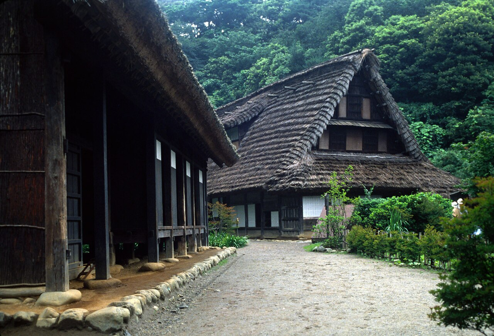
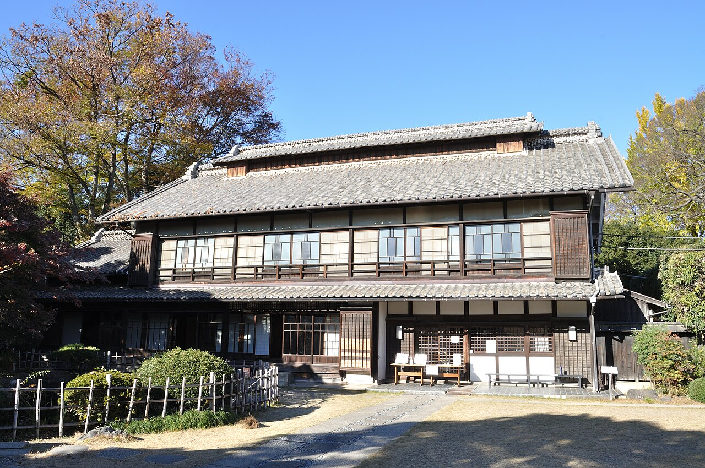
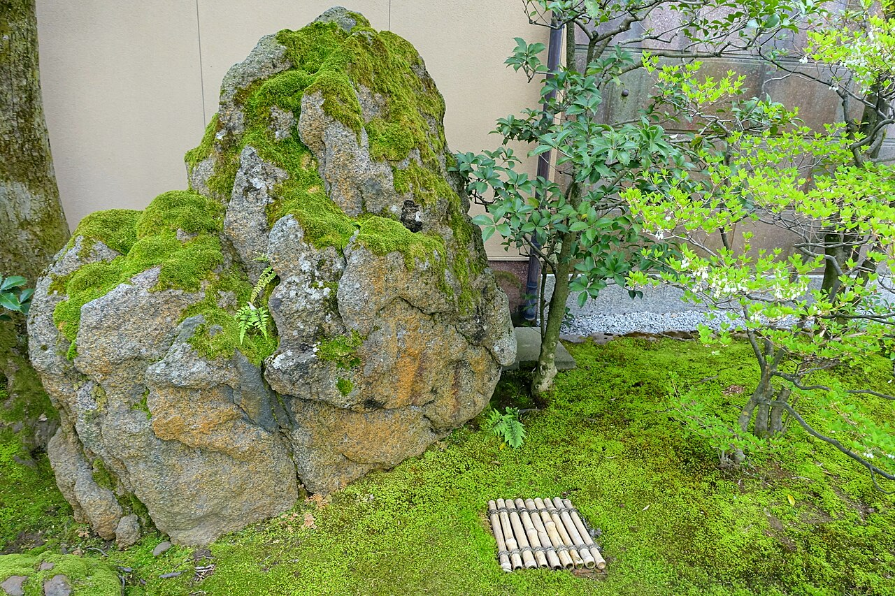
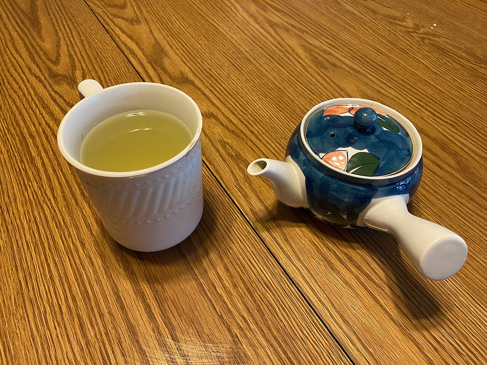
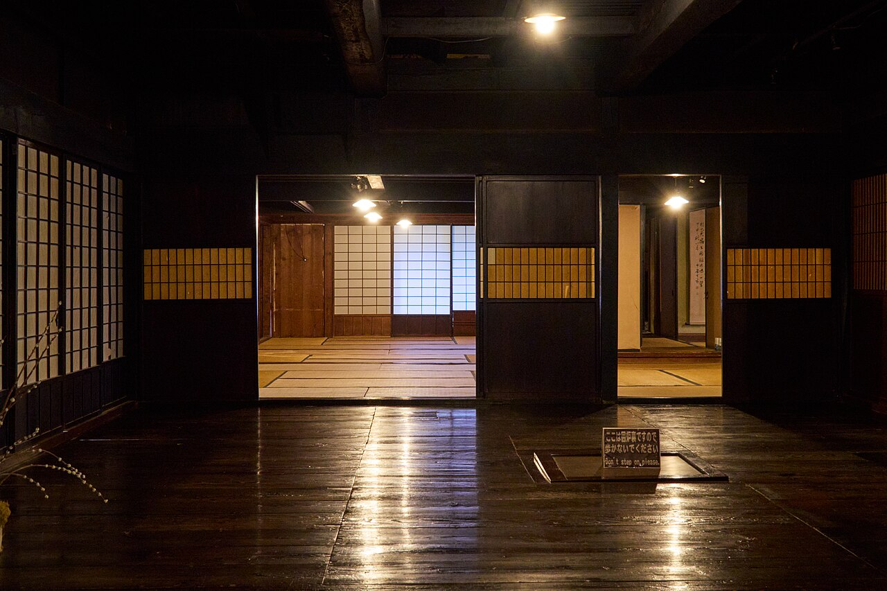
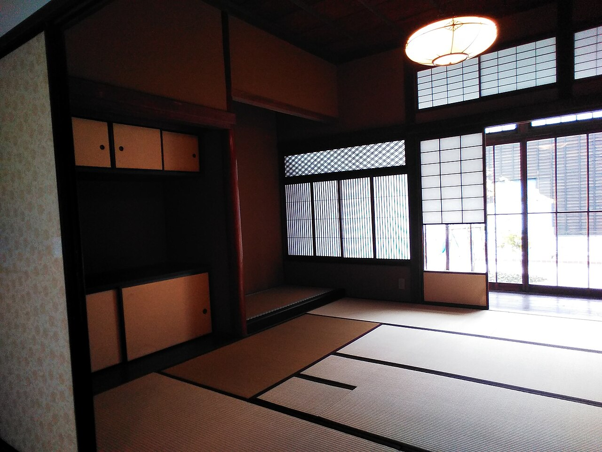
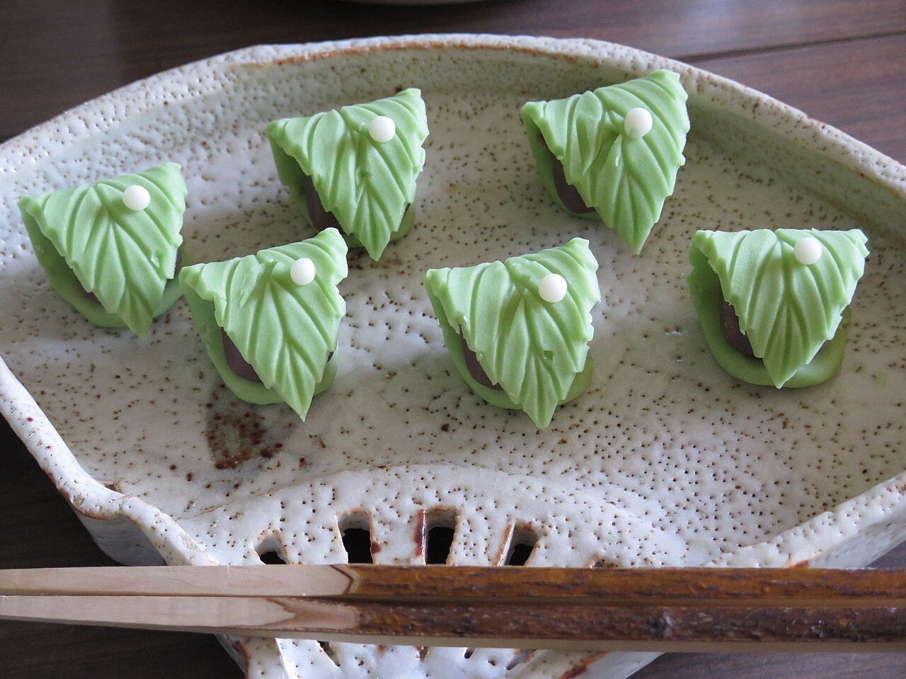
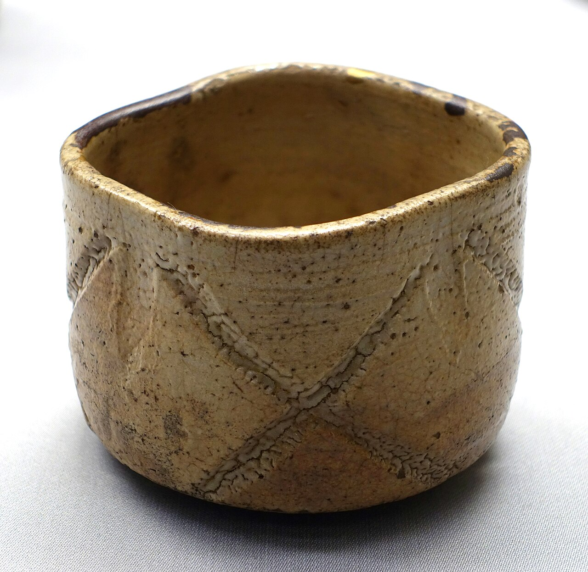

一
縁側という居場所(イメージ)
庭に面した縁側は、古民家の楽しみのひとつ。外の明るさを感じながら、肩の力を抜いてひと息つく時間を思い描いてみてください。
はれのひ

写真はイメージです。実際の店内・お料理とは異なります。
晴れた日に、縁側へ差し込むやわらかな光。
障子越しの白い明かりのなかで、ゆっくりお茶を飲む。
古民家という空間は、そんな「ひと休み」によく似合います。
古民家ならではの空間のイメージです。


以下は古民家の空間のイメージです。店内の実際の間取り・席の種類は、お問い合わせください。

庭に面した縁側は、古民家の楽しみのひとつ。外の明るさを感じながら、肩の力を抜いてひと息つく時間を思い描いてみてください。

土間のある古民家は、ふらりと立ち寄る気軽さが魅力です。お散歩の途中に、少しだけ足を止めるような使い方も似合います。

畳の座敷は、時間の流れがゆるやかになる場所。おしゃべりも、静かな読書も、のんびりと。



詳細は photo_credits.md を参照。写真はいずれもイメージで、実際の店舗の写真ではありません。